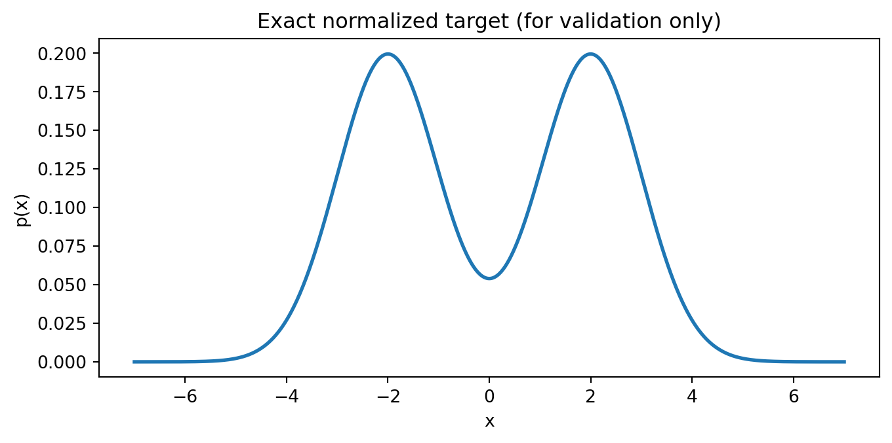
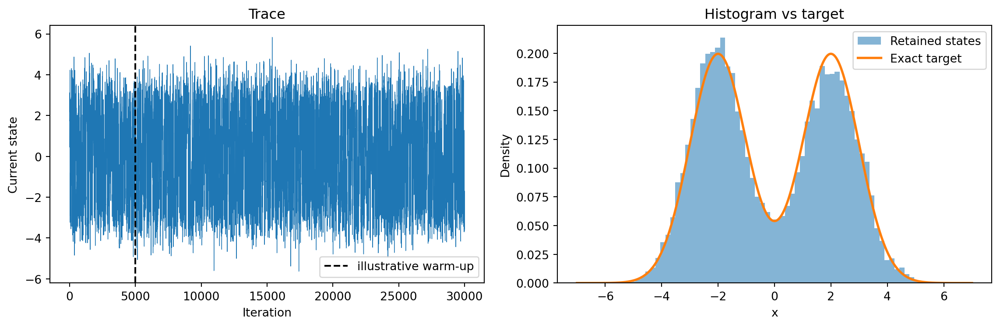
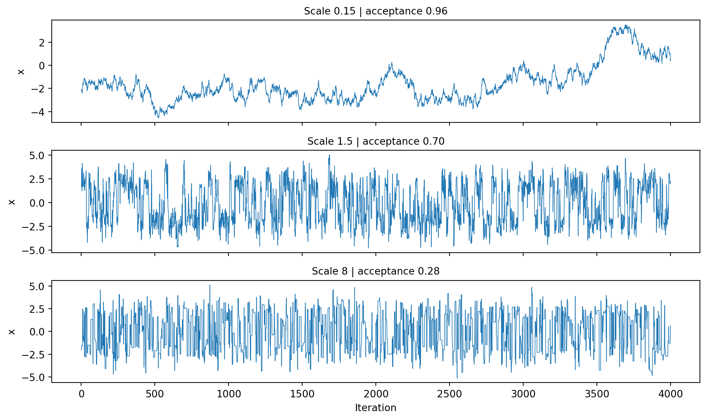
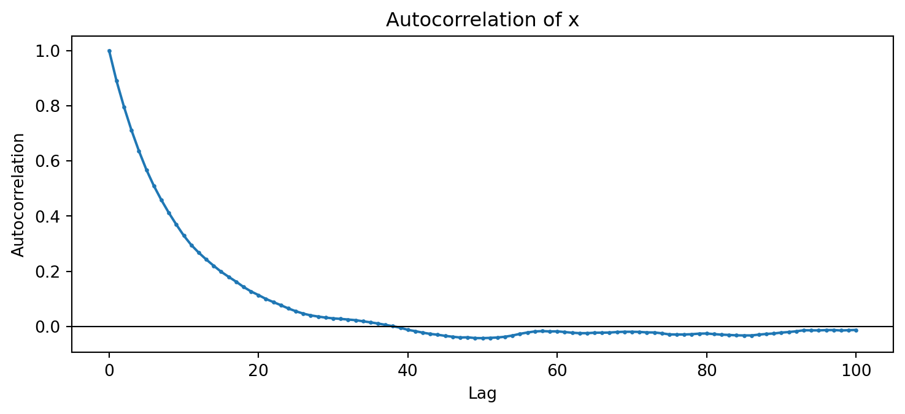
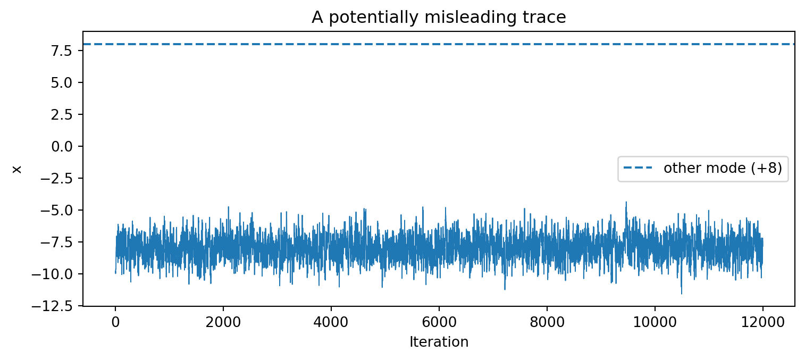
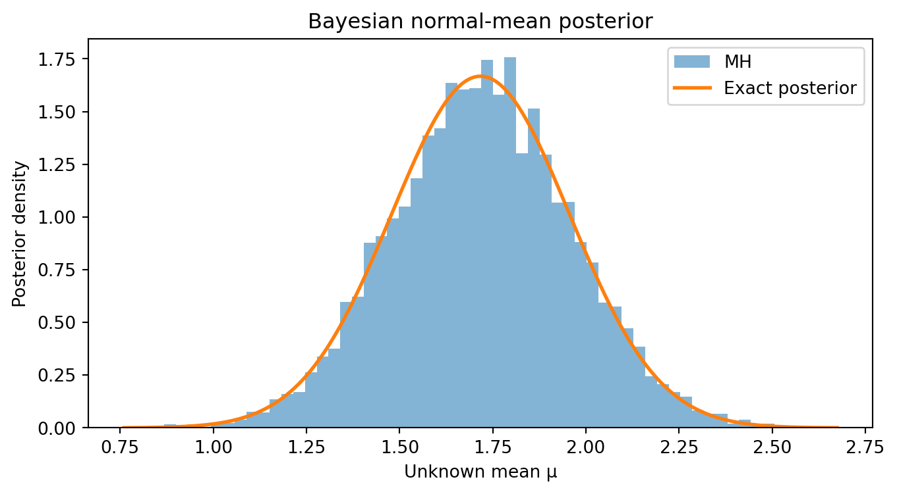

import numpy as np
import matplotlib.pyplot as plt
SEED = 42
rng = np.random.default_rng(SEED)
def metropolis_hastings(log_target, initial, n_steps, proposal_scale,
rng, log_proposal=None):
"""One-dimensional random-walk MH with optional proposal correction.
log_target(x): unnormalized log density at scalar x
log_proposal(to_x, from_x): log q(to_x | from_x)
The default is a symmetric N(current, proposal_scale**2) proposal.
"""
if n_steps < 1 or proposal_scale <= 0:
raise ValueError("n_steps must be positive and proposal_scale > 0")
current = float(initial)
current_logp = float(log_target(current))
if not np.isfinite(current_logp):
raise ValueError("Initial state must have finite log target density")
draws = np.empty(n_steps, dtype=float)
accepted = np.zeros(n_steps, dtype=bool)
for t in range(n_steps):
proposed = current + rng.normal(0.0, proposal_scale)
proposed_logp = float(log_target(proposed))
if np.isnan(proposed_logp):
raise ValueError("Target returned NaN")
log_ratio = proposed_logp - current_logp
if log_proposal is not None:
log_ratio += (log_proposal(current, proposed)
- log_proposal(proposed, current))
if np.log(rng.uniform()) < min(0.0, log_ratio):
current, current_logp = proposed, proposed_logp
accepted[t] = True
draws[t] = current # KEEP repeated states on rejection
return draws, acceptedIn our previous exploration of importance sampling, we saw how changing the sampling distribution can reduce the variance of a Monte Carlo estimator. But importance sampling works best when we can find a tractable proposal distribution that adequately covers the important regions of the target. In difficult, high-dimensional, or multimodal problems, constructing such a proposal can be challenging. Its weights may become extremely uneven, leaving very few effectively useful samples.
Markov chain Monte Carlo (MCMC) takes a different approach. Instead of drawing independent samples from a fixed global proposal and reweighting them, we construct a dependent sequence whose long-run distribution is the target. The best-known starting point is the Metropolis–Hastings (MH) algorithm.
This article develops the underlying mathematics, implements MH without an MCMC library, explores a bimodal distribution, and explains why a histogram alone is insufficient evidence of convergence. We finish with a small Bayesian inference example.
NoteWhat we will learn
- Why sampling from an unnormalized density is possible.
- How the Metropolis–Hastings acceptance rule follows from detailed balance.
- How to implement acceptance decisions stably in the log domain.
- What tuning, burn-in, autocorrelation, effective sample size (ESS), and multi-chain comparisons tell us.
- Why multimodal targets can defeat an apparently reasonable sampler.
1 From Monte Carlo integration to MCMC
Suppose we want to compute an expectation under a probability density \(p\):
\[ \mathbb E_p[f(X)] = \int f(x)p(x)\,dx. \]
If we can generate independent observations \(X_1,\ldots,X_N\sim p\), ordinary Monte Carlo uses
\[ \widehat{I}_N^{\mathrm{iid}} = \frac{1}{N}\sum_{t=1}^N f(X_t). \]
The problem is that evaluating a density and sampling from that density are different tasks. For example, a Bayesian posterior often has the form
\[ p(\theta\mid y)=\frac{p(y\mid\theta)p(\theta)}{p(y)}, \qquad p(y)=\int p(y\mid\theta)p(\theta)\,d\theta. \]
Computing the normalizing constant \(p(y)\) can be difficult, even when the likelihood and prior are easy to evaluate. Let
\[ \widetilde p(\theta)=p(y\mid\theta)p(\theta), \qquad p(\theta\mid y)\propto\widetilde p(\theta). \]
Metropolis–Hastings only needs ratios of unnormalized densities: the unknown constant cancels.
MCMC generates \(X_0,X_1,\ldots\) from a Markov transition mechanism and approximates the expectation using
\[ \widehat{I}_N^{\mathrm{MCMC}}=\frac1N\sum_{t=1}^{N}f(X_t). \]
Unlike ordinary Monte Carlo, the observations are generally correlated. Under suitable ergodicity and integrability assumptions, the ergodic theorem nevertheless gives
\[ \widehat{I}_N^{\mathrm{MCMC}}\xrightarrow{\mathrm{a.s.}}\mathbb E_p[f(X)]. \]
The crucial phrase is under suitable assumptions. A valid stationary distribution does not guarantee that a particular short run has explored it well.
2 What makes a Markov chain useful for sampling?
A process \((X_t)_{t\ge0}\) is a Markov chain when its next state depends on the past only through its current state:
\[ \Pr(X_{t+1}\in A\mid X_t,X_{t-1},\ldots) =\Pr(X_{t+1}\in A\mid X_t). \]
A transition kernel \(K(x,A)\) gives the probability that the next state lies in a set \(A\), conditional on \(X_t=x\). A distribution \(\pi\) is stationary if
\[ \pi(A)=\int K(x,A)\,\pi(dx) \]
for every measurable set \(A\). Informally, if \(X_t\sim\pi\), then \(X_{t+1}\sim\pi\) too.
For MCMC we design \(K\) to have our desired target \(p\) as a stationary distribution. A particularly convenient sufficient condition is detailed balance:
\[ \boxed{\pi(dx)K(x,dx')=\pi(dx')K(x',dx).} \]
Detailed balance says the equilibrium probability flow from \(x\) to \(x'\) matches the flow back. Integrating over starting states shows that it implies stationarity. Detailed balance is sufficient, not necessary: some valid MCMC methods are nonreversible.
Having the correct stationary distribution is only part of the story. To converge to a unique target from arbitrary starting points, a chain must also have appropriate accessibility and recurrence properties; in familiar discrete-state settings, irreducibility and aperiodicity are central. For the continuous-state examples below, a Gaussian random-walk proposal with an everywhere-positive target avoids many of these complications. Even then, convergence may be slow.
ImportantModes are not destinations
An MCMC sampler should spend time in a region in proportion to its probability mass, not merely its peak height. High-density regions can have very little total mass when they are narrow. Consequently, “always climb toward higher density” would be the wrong algorithm.
3 Deriving the Metropolis–Hastings rule
At state \(x\), propose a candidate \(x'\) from a proposal density \(q(x'\mid x)\). Accept the move with probability \(\alpha(x,x')\), otherwise remain at \(x\).
The off-diagonal part of the resulting transition kernel is
\[ K(x,dx')=q(x'\mid x)\alpha(x,x')\,dx',\qquad x'\ne x. \]
The probability of staying put contains the mass of rejected proposals. It is essential to record the repeated current state after a rejection: deleting repeats changes the distribution represented by the chain.
To satisfy detailed balance between distinct states, we seek
\[ p(x)q(x'\mid x)\alpha(x,x') =p(x')q(x\mid x')\alpha(x',x). \]
Define the ratio
\[ r(x,x')=\frac{\widetilde p(x')q(x\mid x')} {\widetilde p(x)q(x'\mid x)}. \]
The Metropolis–Hastings choice is
\[ \boxed{\alpha(x,x')=\min\{1,r(x,x')\}.} \]
To verify it, write
\[ \begin{aligned} p(x)q(x'\mid x)\alpha(x,x') &=\min\{p(x)q(x'\mid x),\ p(x')q(x\mid x')\}\\ &=p(x')q(x\mid x')\alpha(x',x). \end{aligned} \]
The equality works because the same normalizing constant multiplies \(p(x)\) and \(p(x')\). Hence the proposed rule satisfies detailed balance and therefore preserves the target distribution.
This argument assumes the ratio is evaluated wherever proposals and target densities make it meaningful. A practical implementation must respect the target’s support and handle zero-density states carefully.
3.1 Symmetric proposals: the Metropolis special case
If \(q(x'\mid x)=q(x\mid x')\), the proposal terms cancel:
\[ \boxed{\alpha(x,x')=\min\left\{1,\frac{\widetilde p(x')}{\widetilde p(x)}\right\}.} \]
A Gaussian random walk is a standard example:
\[ X'=X_t+\varepsilon_t,\qquad \varepsilon_t\sim\mathcal N(0,s^2). \]
A move to a higher-density state is always accepted. A move to a lower-density state may also be accepted, which allows exploration beyond local maxima. That possibility does not guarantee timely transitions between widely separated modes.
3.2 Asymmetric proposals need the Hastings correction
For a general proposal, such as a drifted Gaussian \(q(x'\mid x)=\mathcal N(x+\delta,s^2)\), one cannot cancel the \(q\) factors. Omitting
\[ \frac{q(x\mid x')}{q(x'\mid x)} \]
would generally produce the wrong stationary distribution. Later we will implement the full formula for arbitrary log proposals.
3.3 Why we compute in the log domain
A direct computation of \(\widetilde p(x')/\widetilde p(x)\) can overflow or underflow, particularly when densities are products of many small likelihood terms. Instead calculate
\[ \log r =\log\widetilde p(x')-\log\widetilde p(x) +\log q(x\mid x')-\log q(x'\mid x). \]
Draw \(U\sim\mathrm{Uniform}(0,1)\) and accept precisely when
\[ \boxed{\log U<\min\{0,\log r\}.} \]
No exponentiation of potentially extreme log densities is needed.
4 Implement Metropolis–Hastings from scratch
We’ll use NumPy for randomness and Matplotlib for plots. The following implementation supports symmetric proposals by default, while allowing a log-proposal function for asymmetric cases. A single random-number generator is passed explicitly for reproducibility.
The \(t\)-th stored value is the chain’s state after proposal \(t\). The initial state is not included in the returned array. Here proposal_scale is the standard deviation, not the variance, of the normal increment.
5 First experiment: a bimodal target
Consider the unnormalized target from our original example:
\[ \widetilde p(x)=e^{-(x-2)^2/2}+e^{-(x+2)^2/2}. \]
This is proportional to an equal mixture of \(\mathcal N(-2,1)\) and \(\mathcal N(2,1)\). In this particular teaching example, the normalizing constant is analytically available:
\[ p(x)=\frac{e^{-(x-2)^2/2}+e^{-(x+2)^2/2}} {2\sqrt{2\pi}} =\tfrac12\varphi(x;-2,1)+\tfrac12\varphi(x;2,1). \]
Knowing the normalizer lets us validate the sampler; MH itself does not use it. The true distribution is symmetric, with mean \(0\) and variance \(1+2^2=5\).
def log_bimodal(x):
# log(exp(a) + exp(b)) without underflow
a = -0.5 * (x - 2.0)**2
b = -0.5 * (x + 2.0)**2
return float(np.logaddexp(a, b))
def bimodal_pdf(x):
return (np.exp(-0.5 * (x - 2.0)**2)
+ np.exp(-0.5 * (x + 2.0)**2)) / (2 * np.sqrt(2 * np.pi))
x_grid = np.linspace(-7, 7, 700)
fig, ax = plt.subplots(figsize=(8, 3.5))
ax.plot(x_grid, bimodal_pdf(x_grid), linewidth=2)
ax.set(xlabel="x", ylabel="p(x)", title="Exact normalized target (for validation only)")
plt.show()
Run a random-walk sampler, with \(s=1.5\), for 30,000 updates. This proposal makes relatively local moves. Whether it crosses between the modes often enough must be checked, not assumed.
n_steps = 30_000
samples, accepted = metropolis_hastings(
log_target=log_bimodal,
initial=0.0,
n_steps=n_steps,
proposal_scale=1.5,
rng=rng,
)
burn = 5_000
post = samples[burn:]
print(f"Acceptance proportion: {accepted.mean():.3f}")
print(f"Post-warm-up sample mean: {post.mean():.3f} (target 0)")
print(f"Post-warm-up sample variance: {post.var(ddof=1):.3f} (target 5)")
fig, axes = plt.subplots(1, 2, figsize=(12, 4))
axes[0].plot(samples, linewidth=0.5)
axes[0].axvline(burn, linestyle="--", color="black", label="illustrative warm-up")
axes[0].set(xlabel="Iteration", ylabel="Current state", title="Trace")
axes[0].legend()
axes[1].hist(post, bins=65, density=True, alpha=0.55, label="Retained states")
axes[1].plot(x_grid, bimodal_pdf(x_grid), linewidth=2, label="Exact target")
axes[1].set(xlabel="x", ylabel="Density", title="Histogram vs target")
axes[1].legend()
plt.tight_layout()
plt.show()Acceptance proportion: 0.682
Post-warm-up sample mean: -0.076 (target 0)
Post-warm-up sample variance: 5.128 (target 5)
The burn = 5000 choice is illustrative, not a mathematically justified universal burn-in rule. We retain the same value for later comparisons. Samples after warm-up remain dependent, and discarding early states does not automatically cure poor mixing.
6 Proposal scale: a trade-off between movement and acceptance
A small Gaussian proposal yields many accepted moves but may explore slowly. An excessively large proposal may suggest mostly implausible states, causing frequent rejections. The goal is efficient exploration, not maximum acceptance.
scales = [0.15, 1.5, 8.0]
fig, axes = plt.subplots(3, 1, figsize=(10, 6), sharex=True)
for ax, scale in zip(axes, scales):
chain, moves = metropolis_hastings(
log_bimodal, initial=-2.0, n_steps=4000,
proposal_scale=scale, rng=np.random.default_rng(1000 + int(scale * 100)))
ax.plot(chain, linewidth=0.6)
ax.set_ylabel("x")
ax.set_title(f"Scale {scale:g} | acceptance {moves.mean():.2f}", fontsize=10)
axes[-1].set_xlabel("Iteration")
plt.tight_layout()
plt.show()
For smooth, approximately Gaussian targets in high dimensions, an acceptance proportion around \(0.234\) appears in a well-known asymptotic optimal-scaling result for certain random-walk Metropolis algorithms. It is not a universal acceptance target, especially not for this one-dimensional bimodal example. In practice, compare estimates and autocorrelation or effective sample size across sensible proposal scales.
TipShould we adapt the proposal scale during the run?
Tuning a proposal during an initial warm-up stage, freezing the tuned value, and then collecting inference draws is a straightforward strategy. Adapting indefinitely requires additional mathematical conditions; naively changing the proposal at every step can invalidate standard stationary-chain reasoning.
7 Why sample count is not effective sample size
If sequential draws were independent, \(N\) samples would provide the usual Monte Carlo variance reduction. MCMC samples are correlated. For a scalar quantity \(f(X_t)\), let \(\rho_f(k)\) be its lag-\(k\) autocorrelation. When the sum converges appropriately, define the integrated autocorrelation time
\[ \tau_{\mathrm{int},f}=1+2\sum_{k=1}^{\infty}\rho_f(k), \]
and its associated asymptotic effective sample size
\[ \boxed{N_{\mathrm{eff},f}\approx\frac{N}{\tau_{\mathrm{int},f}}.} \]
Under a suitable Markov-chain central limit theorem,
\[ \operatorname{Var}(\widehat I_N)\approx \frac{\operatorname{Var}_p(f(X))\tau_{\mathrm{int},f}}{N}. \]
ESS depends on the statistic \(f\): a chain might estimate the mean well but estimate a rare-tail probability poorly. A very negative autocorrelation can even yield ESS greater than the nominal sample count under some conventions. The simple implementation below estimates autocorrelation directly for a demonstration; robust production ESS estimators require more care.
def autocorrelation(x, max_lag=100):
x = np.asarray(x, dtype=float)
if len(x) <= max_lag:
raise ValueError("Need more observations than max_lag")
centered = x - x.mean()
var0 = np.dot(centered, centered)
if var0 == 0:
return np.full(max_lag + 1, np.nan)
return np.array([np.dot(centered[:len(x)-k], centered[k:]) / var0
for k in range(max_lag + 1)])
acf = autocorrelation(post, 100)
fig, ax = plt.subplots(figsize=(9, 3.5))
ax.plot(range(len(acf)), acf, marker=".", markersize=3)
ax.axhline(0, color="black", linewidth=0.8)
ax.set(xlabel="Lag", ylabel="Autocorrelation", title="Autocorrelation of x")
plt.show()
A crude finite-lag estimate is sometimes informative but can be unstable or misleading, especially when mode switching is rare. Here we use a common initial-positive-pairs heuristic for a quick ESS indication, not as a substitute for well-tested diagnostic software.
def illustrative_ess(x, max_lag=1000):
max_lag = min(max_lag, len(x) - 1)
rho = autocorrelation(x, max_lag)
if not np.all(np.isfinite(rho)):
return float("nan")
# Sum adjacent positive autocorrelation pairs; truncate at the first
# nonpositive pair to avoid unstable long-lag noise.
pair_sums = []
for k in range(1, max_lag, 2):
if k + 1 > max_lag:
break
pair = rho[k] + rho[k + 1]
if pair <= 0:
break
pair_sums.append(pair)
tau = max(1.0, 1.0 + 2.0 * sum(pair_sums))
return len(x) / tau
print(f"Crude ESS for x: {illustrative_ess(post):.0f} of {len(post)} retained states")Crude ESS for x: 1415 of 25000 retained statesThinning (retaining only every \(k\)-th draw) typically throws away information and is not a general solution to autocorrelation. It can be useful to control storage or downstream computation, but improving the transition mechanism is usually preferable when possible.
9 A failure case: separated modes
Even a mathematically valid MH chain may cross a low-density valley only extremely rarely. Consider
\[ p_{\mathrm{far}}(x)=\tfrac12\varphi(x;-8,1)+\tfrac12\varphi(x;8,1). \]
A local random-walk proposal can spend the entire experiment in one mode. This is a mixing failure, even if acceptance is high and the trace looks stable.
def log_far_modes(x):
return float(np.logaddexp(-0.5 * (x + 8.0)**2,
-0.5 * (x - 8.0)**2))
far_chain, far_accept = metropolis_hastings(
log_far_modes, initial=-8.0, n_steps=12000,
proposal_scale=1.0, rng=np.random.default_rng(122))
fig, ax = plt.subplots(figsize=(9, 3.5))
ax.plot(far_chain, linewidth=0.7)
ax.axhline(8.0, linestyle="--", label="other mode (+8)")
ax.set(xlabel="Iteration", ylabel="x", title="A potentially misleading trace")
ax.legend()
plt.show()
print(f"Acceptance: {far_accept.mean():.3f}; fraction x > 0: {np.mean(far_chain > 0):.3f}")
Acceptance: 0.704; fraction x > 0: 0.000When different chains are stuck in different modes, their means and occupancy probabilities disagree. Potential remedies include better-scaled or nonlocal proposals, parallel tempering, specialized multimodal methods, or reparameterization. Simply increasing the number of steps is not always computationally feasible.
10 A Bayesian example: inferring an unknown mean
Suppose we observe \(y_1,\ldots,y_n\mid\mu\stackrel{\mathrm{iid}}\sim\mathcal N(\mu,\sigma^2)\) with known \(\sigma\), and place a prior \(\mu\sim\mathcal N(\mu_0,\tau_0^2)\). Up to an additive constant, the log posterior is
\[ \log\widetilde p(\mu\mid y) =-\frac1{2\sigma^2}\sum_{i=1}^n(y_i-\mu)^2 -\frac{(\mu-\mu_0)^2}{2\tau_0^2}. \]
For this conjugate example, the posterior is known analytically:
\[ \tau_n^2=\left(\frac1{\tau_0^2}+\frac n{\sigma^2}\right)^{-1}, \qquad \mu_n=\tau_n^2\left(\frac{\mu_0}{\tau_0^2} +\frac{\sum_i y_i}{\sigma^2}\right), \]
so \(\mu\mid y\sim\mathcal N(\mu_n,\tau_n^2)\). This makes an excellent correctness check for the MCMC code.
data_rng = np.random.default_rng(2026)
y = data_rng.normal(loc=1.8, scale=1.2, size=25)
sigma, mu0, tau0 = 1.2, 0.0, 3.0
def log_posterior_mu(mu):
log_likelihood = -0.5 * np.sum(((y - mu) / sigma)**2)
log_prior = -0.5 * ((mu - mu0) / tau0)**2
return float(log_likelihood + log_prior)
posterior_var = 1 / (1 / tau0**2 + len(y) / sigma**2)
posterior_mean = posterior_var * (mu0 / tau0**2 + y.sum() / sigma**2)
posterior_sd = np.sqrt(posterior_var)
posterior_chain, posterior_accept = metropolis_hastings(
log_posterior_mu, initial=-5.0, n_steps=15000,
proposal_scale=0.5, rng=np.random.default_rng(456))
posterior_draws = posterior_chain[2000:]
mu_grid = np.linspace(posterior_mean - 4 * posterior_sd,
posterior_mean + 4 * posterior_sd, 400)
exact_pdf = np.exp(-0.5 * ((mu_grid - posterior_mean) / posterior_sd)**2)
exact_pdf /= posterior_sd * np.sqrt(2 * np.pi)
fig, ax = plt.subplots(figsize=(8, 4))
ax.hist(posterior_draws, bins=55, density=True, alpha=0.55, label="MH")
ax.plot(mu_grid, exact_pdf, linewidth=2, label="Exact posterior")
ax.set(xlabel="Unknown mean μ", ylabel="Posterior density", title="Bayesian normal-mean posterior")
ax.legend()
plt.show()
print(f"Exact posterior mean: {posterior_mean:.4f}")
print(f"MCMC estimated mean: {posterior_draws.mean():.4f}")
print(f"Exact posterior SD: {posterior_sd:.4f}")
print(f"MCMC estimated SD: {posterior_draws.std(ddof=1):.4f}")
print(f"Acceptance fraction: {posterior_accept.mean():.3f}")
Exact posterior mean: 1.7172
MCMC estimated mean: 1.7214
Exact posterior SD: 0.2392
MCMC estimated SD: 0.2420
Acceptance fraction: 0.483Our example is intentionally simple enough to admit an exact posterior. In more complicated Bayesian models, normalizing constants and posterior moments may be unknown, so multiple-chain diagnostics, sensitivity checks, and prior predictive or posterior predictive reasoning become especially important.
11 Common mistakes and their consequences
| Mistake | Why it matters | Better approach |
|---|---|---|
| Discarding rejected states | Overweights accepted locations; no longer represents the MH chain | Store the current state at every iteration |
| Using a density ratio directly | Underflow/overflow for extreme log likelihoods | Compare log acceptance ratios |
| Cancelling an asymmetric proposal | Violates the intended detailed-balance construction | Include both forward and reverse proposal densities |
| Choosing scale from acceptance alone | High acceptance can accompany tiny exploration steps | Inspect mixing, autocorrelation, ESS, and estimates |
| Treating burn-in as a cure-all | Stationary-looking segments can be trapped in one mode | Run dispersed chains and investigate transitions |
| Treating all draws as independent | Understates uncertainty | Use MCSE/ESS appropriate to the estimand |
| Assuming a good histogram proves convergence | A histogram can hide time ordering and rare transitions | Inspect traces and cross-chain agreement |
A subtle point: samples from a stationary MH chain are not automatically independent. Moreover, the naive sample standard deviation of the chain states measures posterior spread, not the Monte Carlo uncertainty of an estimated posterior mean. For the latter, accounting for temporal dependence is essential.
12 Where this leads next
Metropolis–Hastings is a general framework: it only requires a tractable target-density ratio and a proposal mechanism. Its main practical challenge is choosing proposals that explore efficiently.
- Gibbs sampling draws from full conditional distributions. It can be viewed as a special MH update with acceptance probability one when the full conditional is sampled exactly.
- Hamiltonian Monte Carlo (HMC) uses gradients and simulated Hamiltonian dynamics to propose distant, structured moves. It can work much better than a naive random walk for smooth, high-dimensional posteriors.
- Modern adaptive samplers tune important algorithm parameters during warm-up, while maintaining the conditions necessary for correct inference.
None is universally superior. Gibbs can also mix poorly across correlated variables or separated modes; HMC requires gradients and must contend with challenging geometry and disconnected modes.
13 Exercises
- Detailed balance. Starting with \(\alpha(x,x')=\min\{1,r(x,x')\}\), separately verify detailed balance in the two cases \(r\le1\) and \(r>1\).
- Proposal tuning. For \(s\in\{0.1,0.5,1.5,4,10\}\), report acceptance rate and estimated ESS for the sample mean. Why does the largest acceptance rate not necessarily win?
- Mode occupancy. For the mixture centered at \(\pm2\), estimate \(\Pr(X>0)\) with several chains; compare against the exact value \(1/2\). Repeat for modes centered at \(\pm8\).
- Asymmetric proposal. Replace the random walk with \(q(x'\mid x)=\mathcal N(x+\delta,s^2)\). Derive and implement
log_proposal(to_x, from_x), then compare results with and without the Hastings correction. - Bayesian inference. Change \(n\), \(\sigma\), and the prior scale \(\tau_0\). Predict how the posterior uncertainty changes, then compare the exact and MCMC estimates.
- Uncertainty of an estimate. Compare the naive independent-sample standard error of the posterior mean with an autocorrelation-adjusted estimate. Explain which assumptions each requires.
14 Key takeaways
Metropolis–Hastings turns pointwise evaluation of an unnormalized density into a mechanism for sampling from its normalized distribution, without computing the normalizer. The acceptance probability is not an arbitrary rule: it is a constructive way to enforce detailed balance. But correct stationary distribution, fast mixing, and trustworthy finite-sample estimates are three distinct issues. The last two demand diagnostics and careful computational practice.
15 References and further reading
- Metropolis, N., Rosenbluth, A. W., Rosenbluth, M. N., Teller, A. H., & Teller, E. (1953). Equation of State Calculations by Fast Computing Machines. Journal of Chemical Physics, 21, 1087–1092. https://doi.org/10.1063/1.1699114
- Hastings, W. K. (1970). Monte Carlo Sampling Methods Using Markov Chains and Their Applications. Biometrika, 57(1), 97–109. https://doi.org/10.1093/biomet/57.1.97
- Roberts, G. O., Gelman, A., & Gilks, W. R. (1997). Weak Convergence and Optimal Scaling of Random Walk Metropolis Algorithms. Annals of Applied Probability, 7(1), 110–120. https://doi.org/10.1214/aoap/1034625254
- Vehtari, A., Gelman, A., Simpson, D., Carpenter, B., & Bürkner, P.-C. (2021). Rank-Normalization, Folding, and Localization: An Improved \(\widehat R\) for Assessing Convergence of MCMC. Bayesian Analysis, 16(2), 667–718. https://doi.org/10.1214/20-BA1221
- Betancourt, M. (2017). A Conceptual Introduction to Hamiltonian Monte Carlo. https://arxiv.org/abs/1701.02434